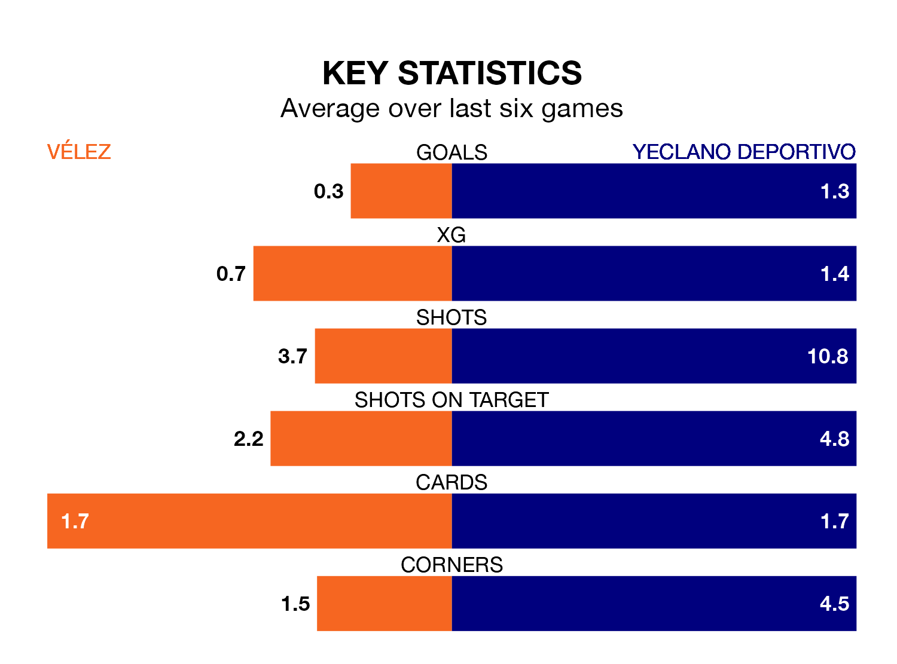

Vélez are on a poor run ahead of hosting Yeclano Deportivo at the Estadio Vivar Téllez on Sunday, with just four points collected from their last six games.
Vélez have picked up one win and one draw in their last six Segunda División RFEF Group 4 games, and face a Yeclano Deportivo side whose last six games have brought three wins and two draws.
With 30 goals in 23 games so far this season, Yeclano Deportivo are the league's third-highest scorers with 1.3 goals per game. And they are conceding fewer than average, letting in 18 goals at a rate of 0.8 per game.
Vélez, meanwhile, are average scorers, with 1.0 goal per game. They have conceded 1.3 goals per game.
The visitors are second in the table after 23 games, of which they have won 13 and drawn six, earning 45 points.
The home team are eight places behind Yeclano Deportivo in 10th, with seven wins and nine draws putting them on 30 points.
In the last three years, Vélez and Yeclano Deportivo have played each other on three occasions. Vélez won one of them and Yeclano Deportivo the other.
Their last meeting was on October 15, when Yeclano Deportivo won 3-1 at home.
Vélez's last match was on February 18, a 2-0 loss against Real Betis B.
Yeclano Deportivo drew 0-0 with Sevilla B last time out, also on Sunday.
Updated: 12:18 (UTC), 19/02/24